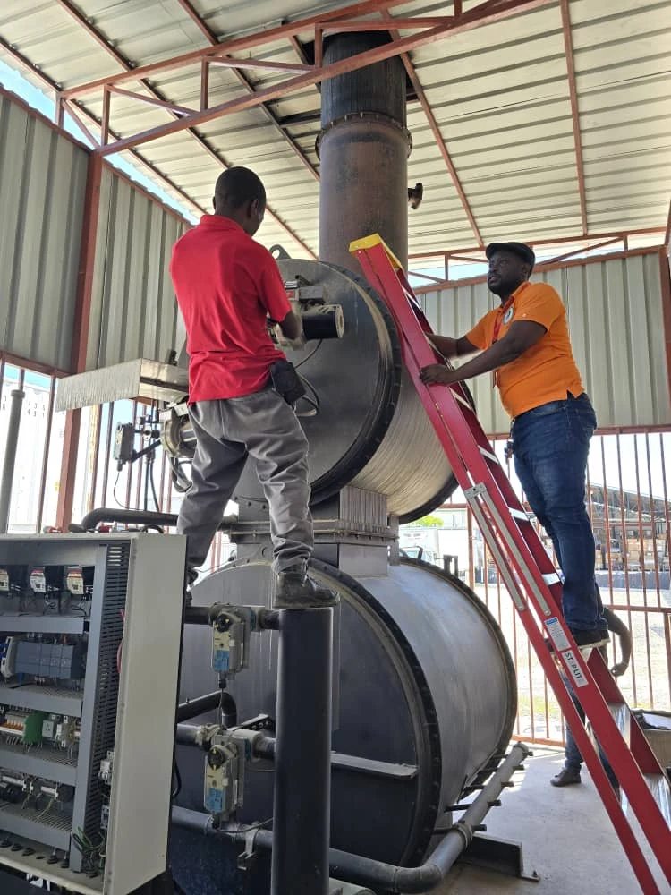

Hôpitaux
Hospitals
Un appui technique pour accompagner les équipes et les besoins des différents services.
Technical support for teams and the needs of different departments.
Laboratoires, cliniques et hôpitaux publics et privés : un accompagnement biomédical adapté à votre établissement, à Port-au-Prince comme dans les villes de province.
Public and private laboratories, clinics and hospitals: biomedical support adapted to your organization, in Port-au-Prince and provincial cities alike.

Un appui technique pour accompagner les équipes et les besoins des différents services.
Technical support for teams and the needs of different departments.
Un accompagnement des équipements, du suivi technique et des pratiques des utilisateurs.
Support for equipment, technical follow-up and user practices.
Un soutien ponctuel ou suivi, adapté aux besoins et aux moyens de chaque structure.
One-time or ongoing support adapted to each facility’s needs and resources.
Maintenance de parcs de congélateurs ultra-basse température pour laboratoire public et ONG.
Maintenance of ultra-low freezer fleets for a public laboratory and NGOs.
Installation de systèmes de surveillance de température des salles et des enceintes de la chaîne du froid - réfrigérateurs et congélateurs - pour laboratoire public.
Installation of temperature monitoring systems for rooms and cold-chain cabinets - refrigerators and freezers - for a public laboratory.
Installation et réparation de microscopes pour clinique privée.
Microscope installation and repair for a private clinic.
Réparation et maintenance d’un générateur d’oxygène pour hôpital privé.
Repair and maintenance of an oxygen generator for a private hospital.
Certification de postes de sécurité microbiologique pour laboratoire public.
Certification of biological safety cabinets for a public laboratory.
Inventaire des équipements, réalisation de fiches techniques, rédaction de manuels de procédures et formation des équipes de cliniques dentaires privées.
Equipment inventory, preparation of technical records and procedure manuals, and staff training for private dental clinics.
Interventions de diagnostic sur différents équipements pour des établissements publics et privés.
Diagnostic interventions on various equipment for public and private organizations.
Évaluation d’équipements et réparation de lecteurs pour laboratoire public.
Equipment assessment and reader repair for a public laboratory.
Maintenance et calibration de machines de PCR en temps réel pour hôpital public.
Maintenance and calibration of real-time PCR instruments for a public hospital.
Un aperçu de nos interventions, au plus près des appareils et des équipes.
A look at our interventions, working alongside equipment and teams.
Des vues d’ensemble aux détails techniques, nos interventions mobilisent les compétences de l’équipe autour des équipements.
From the overall installation to technical details, our interventions bring the team’s expertise together around the equipment.
Une intervention sur un poste de sécurité microbiologique, au cœur de l’environnement de travail.
An intervention on a biological safety cabinet in its working environment.
Les composants et les commandes font aussi partie du suivi des systèmes techniques.
Components and controls are also part of technical system support.
Décrivez vos besoins et les équipements concernés.
Tell us about your needs and the equipment involved.